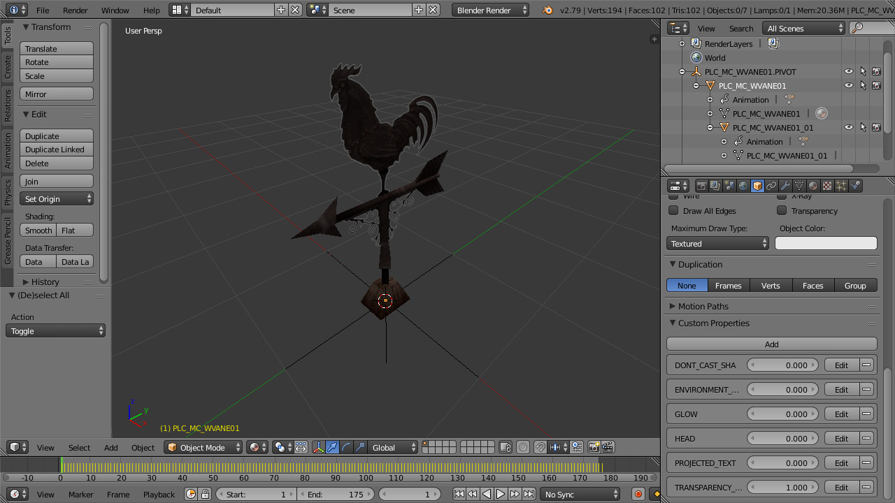

Tutorial: Animated multipart placeable
What is a multipart placeable?
In NWN2, a placeable can be made of several parts. One part must be the main part and the other parts are the attached parts. Each part is stored in his own MDB file. The attached parts must be named same as the main part followed by an underscore and a two digit number that starts with 01 for the first attached part. For example, the placeable Chest (01 Medium) is composed of the following parts:
- Main part: PLC_ML_CHESTM01.MDB
- Attached part: PLC_ML_CHESTM01_01.MDB
These files, particulary, are stored in Data\NWN2_Models.zip, located at the NWN2 installation directory.
Why we need multipart placeables?
We need multipart placeables in order to apply a different animation curve to each part. For example, the main part of a chest and the attached part have different animations when opening or closing. The main part is always idle while the attached part isn’t.
Placeable Animations
A placeable can have many animations. Each animation is stored in a file named same as the placeable followed by an underscore, the name of the animation and the extension GR2. There is a set of standard placeable animations that are used by NWN2:
- placeable_name_IDLE.GR2: Default animation. Used also for the closed state.
- placeable_name_PLC_OPENIDLE.GR2: Used for the open state.
- placeable_name_PLC_OPEN.GR2: Used for the opening animation.
- placeable_name_PLC_CLOSE.GR2: Used for the closing animation.
- placeable_name_PLC_TURNON.GR2: Used for the activating animation.
- placeable_name_DR_OPEN1.GR2: Used for the opening door animation (direction 1, e.g. push).
- placeable_name_DR_OPEN2.GR2: Used for the opening door animation (direction 2, e.g. pull).
For an animated placeable, only the IDLE animation is required.
For the placeable Chest (01 Medium), we find in Data\lod-merge.zip two animations:
- PLC_ML_CHESTM01_IDLE.GR2
- PLC_ML_CHESTM01_PLC_OPENIDLE.GR2
Animation Blending
As you could see before, the placeable Chest (01 Medium) only has two animations:
- PLC_ML_CHESTM01_IDLE.GR2: Idle animation for the closed state.
- PLC_ML_CHESTM01_PLC_OPENIDLE.GR2: Idle animation for the open state.
However, if you click the chest in game to open or close it, you will see opening and closing animations. Why is that? That is because the transition from one animation to another animation is not instant. Instead, the NWN2 engine transitions gradually, blending the two animations. This way, if you want to animate a placeable, you can save from making some animations as long as the blending produces the result you want.
Note: For the animation blending to work, the IDLE animation must have only one frame.
Converting animated multipart placeable from NWN2 to FBX
To convert an animated multipart placeable to FBX you must pass to nw2fbx all the parts of the placeable and an animation. We are going to take as example the placeable Weather Vane. Drag & drop these files to nw2fbx:
- PLC_MC_WVANE01.mdb
- PLC_MC_WVANE01_01.MDB
- PLC_MC_Wvane01_idle.GR2
We are going to analyze the generated FBX. This is a screenshot of Blender with the FBX imported into it.

- The main part, PLC_MC_WVANE01, is child of the empty object PLC_MC_WVANE01.PIVOT. This is as explained in the animated placeable tutorial.
- The attached part PLC_MC_WVANE01_01 is child of the main part.
- If you play the animation, you will see that each part has a different animation. The main part, which is the base part, remains still, while the attached part rotates erratically as a consequence of the wind.
Converting animated multipart placeable from FBX to NWN2
First, you should read the tutorial about animating a placeable, which explains the fundamentals. This section isn’t going to be as detailed as that tutorial because I’m going to assume you know the fundamentals.
Step 1: Create the models and animations
- Using your DCC of choice (Blender, 3ds Max, Maya, …) create the models and animations. You must create the main part, the attached parts and the other objects as needed (collision mesh, walk mesh and so on).
- The attached parts must be named same as the main part followed by an underscore and a two digit number that starts with 01 for the first attached part.
- You must create the animation pivot as explained in the tutorial about animation a placeable. You must name the animation pivot as the main part and append “.PIVOT” to the end. See the weather vane screenshot for an example.
- The main part must be child of the animation pivot and the attached parts must be children of the main part. See the weather vane screenshot for an example.
Note: Don’t animate the animation pivot, only the placeable parts.
Step 2: Generate a MDB file for each part
- Export to FBX only the main part and convert the FBX to MDB using fbx2nw.
- Do the same for each attached part.
Note: I’m not sure if having each part in its own MDB file is a must or not. I’ve inspected quite a lot of NWN2 animated placeables and all of them follow this pattern. However, I tried to animate a placeable with all the parts in the same MDB and it seemed to work, but who knows if there are situations where it fails…
Step 3: Generate the GR2 files
- Export all objects and an animation to a single FBX.
- Convert the FBX to NWN2 using fbx2nw. This sould generate a MDB file containing all the parts, a GR2 file containing a skeleton and another GR2 file containing the animation.
- Ignore the generated MDB, which contains all the parts.
Step 4: Edit placeables.2da
We have generated all the files we need: a MDB for each part, a GR2 containing the skeleton and a GR2 file containing the animation. Now, you must add or edit the row of the placeable in placeables.2da the following way:
- Column PlaceableModelType: set to 2 to indicate it’s an animated placeable.
- Column NWN2_Skeleton: the name of the GR2 file containing the skeleton without the file extension. For example: PLC_MC_WVANE01.
- Column AttachedModelName: if the placeable has just one attached part, you can set the name of the attached part. In any case, you can set the name of the main part follow by an underscore and two question marks. For example: PLC_MC_WVANE0101** or **PLC_MC_WVANE01??.
- Column SoundAppType: this is a reference to placeableobjsnds.2da,
which defines a “placeable sound set” consisting of entries for sound to
play on opened, closed, etc. The default row, row 0, is the row for a medium
wood chest, so that is the sound set that will play if this entry is left as
****.